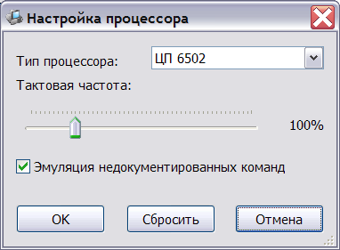
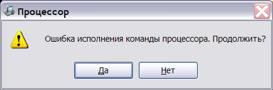

Эмулятор подерживает три различных модуля эмуляции процессора:
Выбор режима эмуляции выполняется в окне настроек процессора:

Кроме типа процессора, имеется возможность выбрать скорость эмуляции процессора (в процентах от реальной, от 1% до 500%) и указать необходимость эмуляции недокументированных команд для модуля процессора 6502.
При отключенной эмуляции недокументированных команд, исполнение такой команды вызывает сообщение об ошибке:

При выборе продолжения исполнения, ошибочная команда пропускается и осуществляется переход к следующей команде, что может вызвать повторное появление окна ошибки.
При остановке выполнения (вариант "Нет") система переходит в неактивное состояние и может быть закрыта после изучения содержащейся на экране информации:
При необходимости пропустить длинные вступления или ускорить время счёта, можно временно повысить частоту процессора. Это может быть сделано нажатием клавиши App-Key (клавиша с изображением меню и стрелки между клавишами Alt и Ctrl на правой стороне клавиатуры). При отпускании клавиши частота процессора возвращается к штатной.
Также процессор может временно ускоряться при обращении к дисководу или интерфейсу магнитофона ("Быстрый" режим).
См. также: Изменение конфигурации, Описание и настройка устройств, Поддерживаемое оборудование, Главное меню